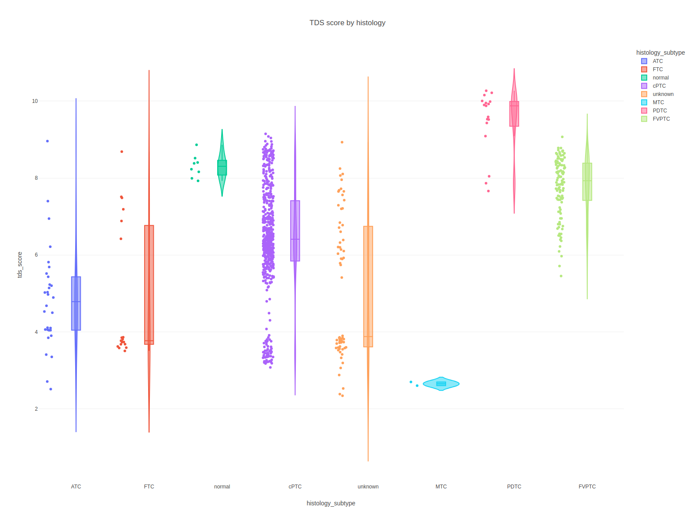
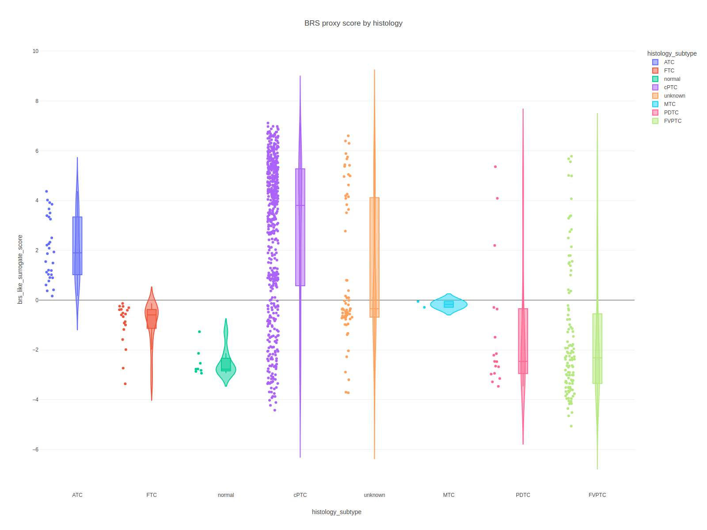

06 / SCORES
점수 시각화 | THCA Multi-Omics Dashboard
TDS / BRS proxy / dedifferentiation proxy를 subtype 별로 비교합니다.
ViolinDensityRadar
점수 해석 프레임
세 점수의 생물학적 의미
점수 해석 프레임: TDS/BRS/dediff
TDS (Thyroid Differentiation Score)
- 정상 갑상선 세포가 가지는 고유 기능 유전자(TG, TPO, SLC5A5 등) 발현 강도의 평균.
- 높을수록 분화 잘 되어 있음 = 정상에 가까움. 낮을수록 dedifferentiation 진행.
BRS (BRAF-RAS Score)
- 71개 유전자 집합에서 BRAF-like vs RAS-like 축에 투영한 값.
- 양수(+)이면 BRAF-like, 음수(−)이면 RAS-like.
Dedifferentiation score
- 저분화/미분화 특징(예: EMT, 줄기세포성)이 얼마나 나타나는지를 보여주는 값.
- 높을수록 ATC/PDTC에 가깝고 예후가 나쁜 경향.
한 줄 요약
- TDS ↓ + dediff ↑ 이면 공격적, BRS 부호가 subtype의 방향을 알려줍니다.
점수 의미
- TDS는 thyroid differentiation 축을 반영합니다. 높을수록 분화형 thyroid lineage가 유지된 패턴입니다.
- BRS proxy는 공식 BRS가 아니라 TCGA-derived proxy입니다. 방향성 해석은 가능하지만 절대값 해석은 제한적입니다.
- dedifferentiation proxy는 EMT/invasion 계열과 TDS 대비를 조합한 탐색 점수입니다.
분포
violin plot 처음 보는 경우
분포(violin/box) 해석
violin plot이 뭔가
- box plot(중앙값/사분위)에 확률밀도 모양을 덧씌운 플롯. 한쪽으로 치우친 분포, 이중 모드 분포 등을 한눈에 보여줍니다.
읽는 법
- 허리가 두꺼운 부분 = 그 값 근처에 샘플이 많다.
- 좌우 폭이 모두 길면 variance가 큼 = 서브그룹이 혼재했을 가능성.
이 섹션에서
- subtype 축(BRAF_like / RAS_like / normal / dediff)으로 비교하므로 서로 다른 subtype의 violin이 얼마나 겹치는지가 "얼마나 구분하기 어려운가"를 말해줍니다.
violin + box + point를 함께 써서 subtype별 분포, 중심, 이상치를 동시에 보이게 했습니다.

scores tds violin
페이지 안에서는 PNG preview를 기본으로 먼저 보여주고, 아래 접힘 패널에서 Plotly 인터랙티브 버전을 바로 확대해서 볼 수 있습니다.

scores brs violin
페이지 안에서는 PNG preview를 기본으로 먼저 보여주고, 아래 접힘 패널에서 Plotly 인터랙티브 버전을 바로 확대해서 볼 수 있습니다.
2D / Radar
복합 지표 비교법
2D / Radar 차트 읽기
2D scatter
- 두 점수(예: TDS × BRS)를 축으로 놓아 각 샘플을 점으로 찍습니다.
- 사분면(+,+ / +,− 등)별 분포를 보면 subtype의 생물학적 축을 이해할 수 있습니다.
Radar chart
- 여러 점수(TDS, BRS, dediff, ...)를 축으로 돌려놓고 한 샘플/그룹의 다차원 프로파일을 polygon으로 그립니다.
- 폴리곤의 크기/모양 비대칭성으로 "어떤 축이 강한가"를 빠르게 비교합니다.
주의
- Radar는 축 순서가 바뀌면 모양이 달라지므로 축 배열이 고정돼 있어야 공정한 비교가 됩니다.
밀도도는 두 점수 축이 함께 움직이는지 보는 용도이고, radar는 subtype 평균을 축약해서 보여줍니다.
Embedding 연동 보기
점수와 임베딩을 같이 보는 이유
Embedding 연동 보기
왜 연동하나
- 점수 분포만 보면 "수치는 비슷한데 실제 샘플은 전혀 다른 클러스터"에 있는 경우를 놓칠 수 있습니다.
- 2D 임베딩 위에 점수를 색으로 덧씌우면 "어느 영역에서 BRAF-like 확신이 세진다"를 눈으로 확인할 수 있습니다.
팁
- UMAP 좌표 위에 BRS를 heatmap처럼 칠했을 때 grad가 부드럽게 흐르면 그 축이 실제로 연속적 signal임을 뒷받침합니다.
점수 구조가 실제 embedding 분리와 어떻게 연결되는지 바로 이어서 볼 수 있게 PCA/UMAP도 같은 페이지에 붙였습니다.